The Physical Workspace: Accessibility Navigation
The Physical Workspace allows support with third party screen reader applications, such as Microsoft Narrator or Apple VoiceOver. With a screen reader application on, the physical workspace allows you to navigate, activate, select, move, connect, take, and place your devices with Accessibile Navigation.
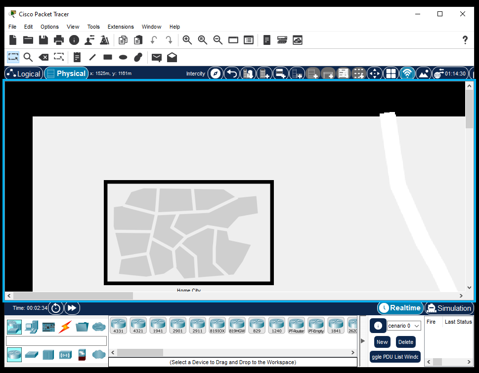
With your screen reader application open, you can navigate from object to object within the Physical workspace. This can be done by your screen reader's Move to next item command. For example, these are the arrow keys for Microsoft Navigator or Apple VoiceOver.
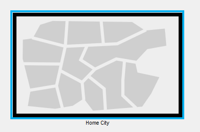
After selecting the object you wish to enter, you can press the primary action function of your screen reader to activate a sub-menu. For Example, this is "Enter" on Microsoft Narrator, or "Return" on Apple VoiceOver. This submenu can be used to enter cities, offices, or working closets. Using the arrow keys allows you to traverse through the sub-menu.
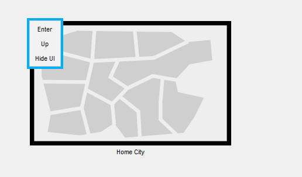
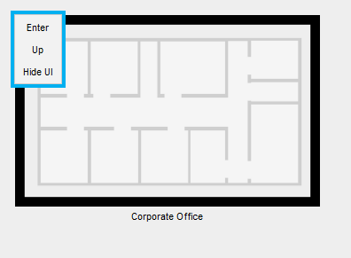
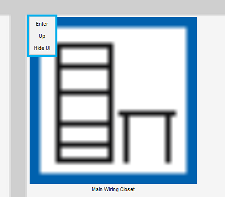
Within the Working Closet, using your screen reader's Move to next item command, you can navigate through the different component boxes, like creating a rack or selecting a device. These can be selected or created with the primary action function of your screen reader.
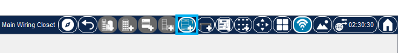
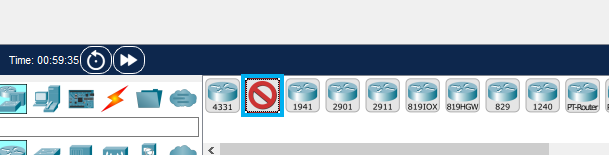
You can access items on the rack by traversing to the rack. With your screen reader's Move to next item command, you can scroll through the items through the rack.
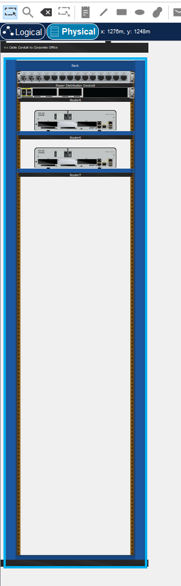
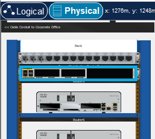
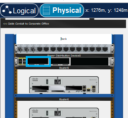
If you have an existing device selected (either by selecting an existing device or selecting a device in the Component Box) you can add a device to the rack by selecting an empty section of the rack, and pressing the primary action function of your screen reader.
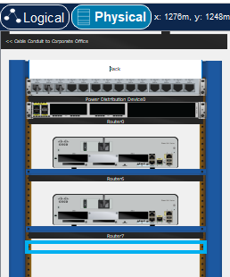
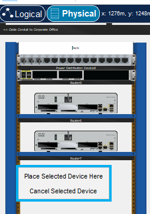
With your screen reader's Move to next item command, you can enter and select the options within the submenu to add your device. Press the primary action function of your screen reader to add your device.
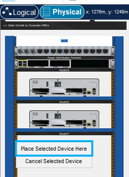
You can also go to an existing device to enter the Device's Configuration Dialog. Navigate to a device and press the primary action function of your screen reader. This brings up a similar submenu.
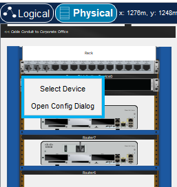
Similar to adding a device, you can also connect devices. By selecting a cable, navigating to the desired port of a decive, and press the primary action function of your screen reader. This brings up a connection submenu
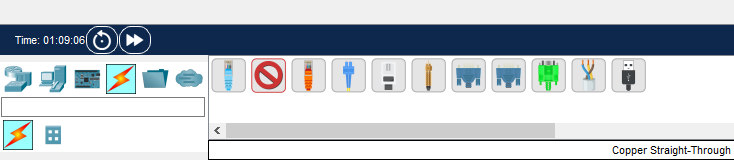
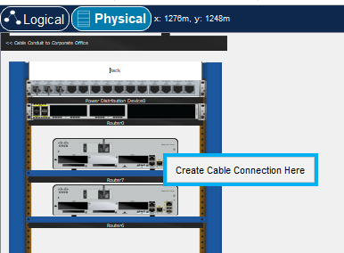
You can learn more about Screen Reader Accessibility through Microsoft's Complete Guide to Narrator or Apple's VoiceOver User Guide. |